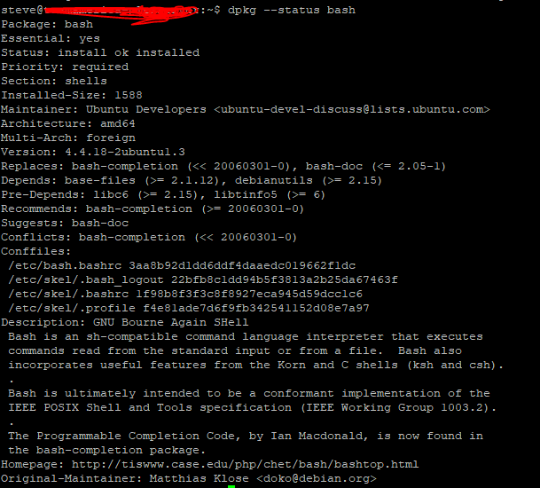

Introduction
As a beginner Linux user, understanding package management is crucial for installing, updating, and removing software on your system. In this comprehensive guide, we’ll explore the fundamentals of package management in Linux, covering key concepts, common tasks, and the essential tools you need to know.
What is Package Management?
Package management is the process of handling software packages in Linux, including installation, updates, and removal. Linux distributions use package management systems to simplify software management and maintain system stability.
Packages and Repositories
A package is a compressed archive containing all the files needed to install a specific software, along with metadata describing its purpose, version, and dependencies. Packages are stored in repositories, which are servers that host collections of packages.
Package Dependencies
Programs often rely on shared libraries and other components to function correctly. When a package requires a shared resource, it is said to have a dependency. Package management systems handle dependency resolution to ensure all necessary components are installed.
Package Management Tools
Linux distributions provide low-level and high-level package management tools. Low-level tools handle basic tasks like installing and removing package files, while high-level tools manage metadata searching and dependency resolution.
Debian-based Distributions
Debian-based distributions, such as Ubuntu, use the following tools:
- Low-level tool: dpkg
- High-level tools: apt-get, aptitude
Red Hat-based Distributions
Red Hat-based distributions, like Fedora, Red Hat Enterprise Linux, and CentOS, use:
- Low-level tool: rpm
- High-level tool: yum
Common Package Management Tasks
Let’s explore the most common package management tasks and the commands used to perform them.
Finding a Package in a Repository
To search for a package in a repository based on its name or description, use:
- Debian-based: apt-get update; apt-cache search search_string
- Red Hat-based: yum search search_string
Installing a Package from a Repository
To download and install a package from a repository with dependency resolution, use:
- Debian-based: apt-get update; apt-get install package_name
- Red Hat-based: yum install package_name
Installing a Package from a Package File
If you have a package file from a non-repository source, you can install it directly using low-level tools:
- Debian-based: dpkg –install package_file
- Red Hat-based: rpm -i package_file
Removing a Package
To uninstall a package, use the following high-level tools:
- Debian-based: apt-get remove package_name
- Red Hat-based: yum erase package_name
Updating Packages from a Repository
Keeping your system up-to-date is crucial. To update installed packages, use:
- Debian-based: apt-get update; apt-get upgrade
- Red Hat-based: yum update
Upgrading a Package from a Package File
To upgrade an existing package using a package file from a non-repository source:
- Debian-based: dpkg –install package_file
- Red Hat-based: rpm -U package_file
Listing Installed Packages
To display a list of all installed packages on your system:
- Debian-based: dpkg –list
- Red Hat-based: rpm -qa

Determining if a Package is Installed
To check if a specific package is installed:
- Debian-based: dpkg –status package_name
- Red Hat-based: rpm -q package_name

Displaying Info About an Installed Package
To view a description of an installed package:
- Debian-based: apt-cache show package_name
- Red Hat-based: yum info package_name
Finding Which Package Installed a File
To determine which package is responsible for installing a particular file:
- Debian-based: dpkg –search file_name
- Red Hat-based: rpm -qf file_name
Your Turn!
Now that you’ve learned the basics of package management in Linux, it’s time to practice! Try performing the following tasks on your Linux system:
- Search for the “nginx” package in your distribution’s repository.
- Install the “htop” package.
- Remove the “nano” package.
- Update all installed packages to their latest versions.
Solution
Debian-based: apt-get update; apt-cache search nginx Red Hat-based: yum search nginx
Debian-based: apt-get update; apt-get install htop
Red Hat-based: yum install htopDebian-based: apt-get remove nano Red Hat-based: yum erase nano
Debian-based: apt-get update; apt-get upgrade Red Hat-based: yum update
Quick Takeaways
- Package management simplifies software installation, updates, and removal in Linux.
- Packages are stored in repositories and can have dependencies.
- Debian-based distributions use dpkg, apt-get, and aptitude for package management.
- Red Hat-based distributions use rpm and yum for package management.
- Common tasks include searching, installing, removing, and updating packages.
Conclusion
Package management is an essential skill for any Linux user. By understanding the basics of packages, repositories, and the tools used to manage them, you can keep your Linux system up-to-date, secure, and tailored to your needs. Remember to use the appropriate commands for your distribution, and don’t hesitate to consult the official documentation for more advanced package management techniques.
Frequently Asked Questions
What is the difference between a high-level and low-level package management tool? High-level tools like apt-get and yum handle metadata searching and dependency resolution, while low-level tools like dpkg and rpm are used for basic tasks such as installing and removing package files.
Can I install a package without using a repository? Yes, you can install a package directly from a package file using low-level tools like dpkg (Debian-based) or rpm (Red Hat-based). However, this method does not resolve dependencies automatically.
How do I add a new repository to my Linux system? The process of adding a repository varies depending on your distribution. Generally, you’ll need to add the repository’s URL to a configuration file and then update your package lists.
What should I do if I encounter unmet dependencies while installing a package? If you encounter unmet dependencies, try updating your package lists and upgrading your system first. If the issue persists, you may need to manually install the missing dependencies or search for a compatible version of the package.
How often should I update my Linux system’s packages? It’s recommended to update your Linux system’s packages regularly, preferably weekly or whenever critical security updates are released. This helps maintain system stability, security, and compatibility.
We hope this beginner’s guide to package management in Linux has been informative and helpful. If you have any further questions or need assistance, don’t hesitate to reach out to the Linux community forums or consult the official documentation for your distribution. Happy package managing!
References
Please share your thoughts and experiences with package management in Linux! If you found this guide helpful, consider sharing it with your friends and colleagues who are also starting their Linux journey. Don’t forget to leave a comment below and let us know how you manage packages on your Linux system.
Happy Coding! 🚀
You can connect with me at any one of the below:
Telegram Channel here: https://t.me/steveondata
LinkedIn Network here: https://www.linkedin.com/in/spsanderson/
Mastadon Social here: https://mstdn.social/@stevensanderson
RStats Network here: https://rstats.me/@spsanderson
GitHub Network here: https://github.com/spsanderson
Bluesky Network here: https://bsky.app/profile/spsanderson.com